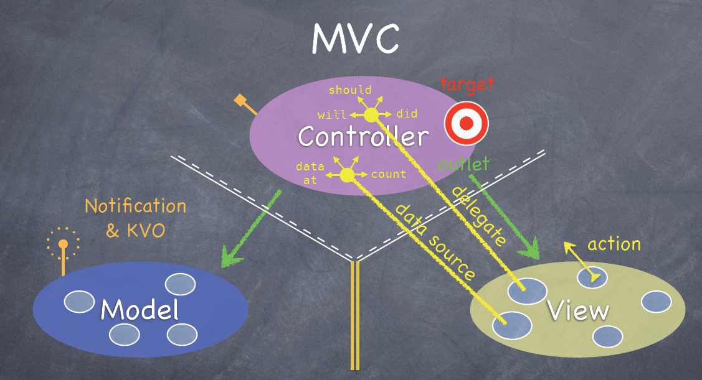
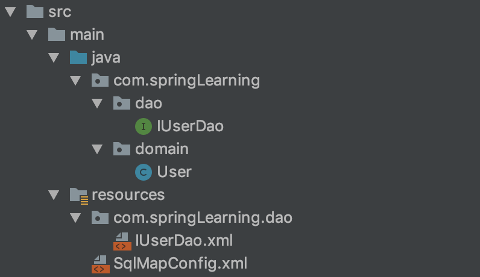

框架
通俗地讲，它是我们软件开发中的一套解决方案，不同的框架解决的是不同的问题。Mybatis解决的就是持久层的问题。
使用框架的好处
- 框架封装了很多的细节，使开发者可以使用极简的方式实现功能，大大提高开发效率。
- 简而言之，框架就是某种应用的半成品。
解决的问题
三层架构
- 表现册：展示数据
- 业务层：处理业务需求
- 持久层：和数据库交互

Dao(Data Access Object)：数据访问层-----Mybatis
Spring不属于任何一层
Spring MVC是一个表现层框架
持久层技术解决方案
- JDBC技术
涉及三个对象- Connection
- PreparedStatement
- ResultSet
- Spring的JdbcTemplate
Spring中对jdbc的简单封装 - Apache的DBUtils
和Spring的JdbcTemplate很像，也是对jdbc的简单封装
以上这些都不是框架
- JDBC是规范
- Spring的JdbcTemplate和Apache的DBUtils都只是工具类，对规范的简单封装，实现。并不是框架，原因是只是使用的封装，并没有完整的解决方案，封装得不够细致，使用时还有很多需要处理。
回顾jdbc程序，为了一条sql语句涉及了很多繁琐代码。应该是关注需求。
Mybatis框架
是一个用Java编写的持久层框架
使开发者只需要关注sql语句本身，不需要花费精力去处理加载驱动、创建连接、创建statement等等。使用mybatis框架执行sql并将结果映射为Java对象并返回。
- 通过xml或注解的方式实现配置
- 采用ORM思想解决实体和数据库映射的问题，对jdbc进行了封装，屏蔽了jdbc api底层访问细节
ORM
Object Relational Mapping 对象关系映射
把数据库表和实体类及实体类的属性对应起来，让我们可以操作实体类就实现操作数据库表。
| 数据库表 | 实体类及实体类的属性 |
|---|---|
| user表 | User类 |
| id | userId |
| user_name | userName |
将查出来的数据封装到实体类里
Mybatis环境搭建
项目目录

- 第一步：创建maven工程并导入坐标
1 | <packaging>jar</packaging> |
- 第二步：创建实体类和dao的接口
1 | package com.springLearning.domain; |
tip：Generate ⟹ Getter and Setter/toString()
-
第三步：创建Mybatis的主配置文件
- SqlMapConfig.xml
1
2
3
4
5
6
7
8
9
10
11
12
13
14
15
16
17
18
19
20
21
22
23
24
25
26
27
<!--mybatis的主配置文件-->
<configuration>
<!-- 配置环境-->
<environments default="mysql">
<!-- 配置mysql的环境-->
<environment id="mysql">
<!-- 配置事务的类型-->
<transactionManager type="JDBC"></transactionManager>
<!-- 配置数据源（连接池）-->
<dataSource type="POOLED">
<!-- 配置连接数据库的基本信息-->
<property name="driver" value="com.mysql.cj.jdbc.Driver"/>
<property name="url" value="jdbc:mysql://localhost:3306/eesy_mybatis"/>
<property name="username" value="root"/>
<property name="password" value="12345678"/>
</dataSource>
</environment>
</environments>
<!--指定映射配置文件的位置，映射配置文件指的是每个dao独立的配置文件-->
<mappers>
<mapper resource="com/springLearning/dao/IUserDao.xml"/>
</mappers>
</configuration> -
第四步：创建映射配置文件
- IUserDao.xml
1
2
3
4
5
6
7
8
9
10
11
12
13
<!--namespace写的是dao的全限定类名-->
<mapper namespace="com.springLearning.dao.IUserDao">
<!-- 配置查询所有-->
<!-- id是方法的名称-->
<select id="findAll">
<!-- ";"写不写都可以 -->
select * from user;
</select>
</mapper>